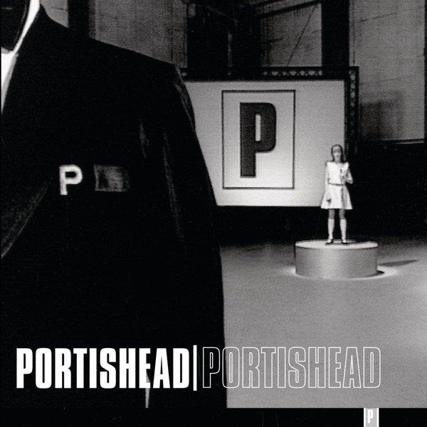
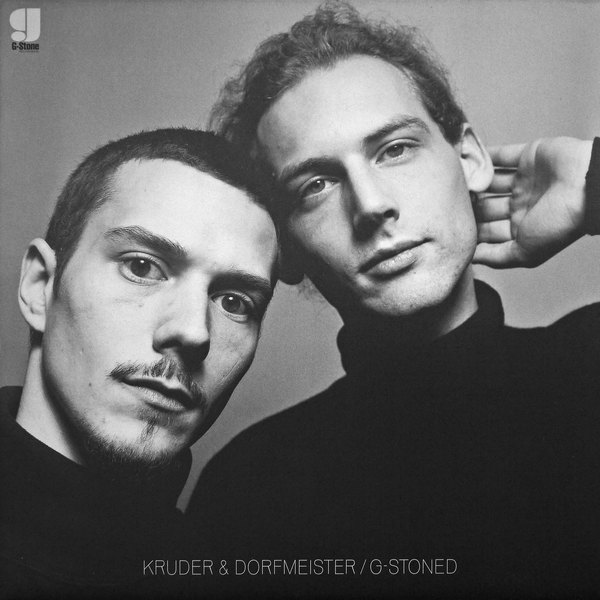
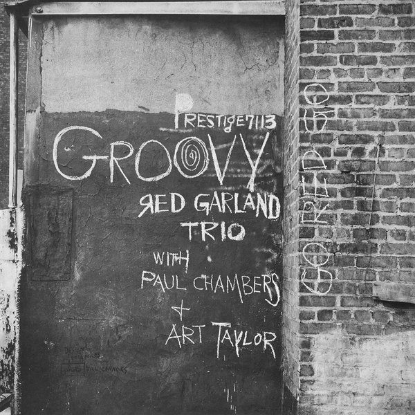
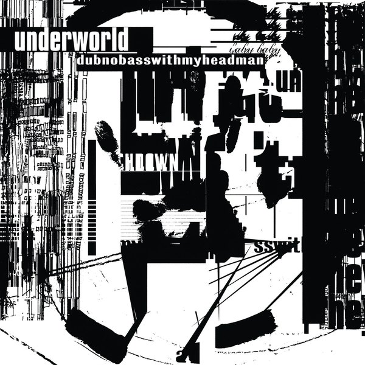
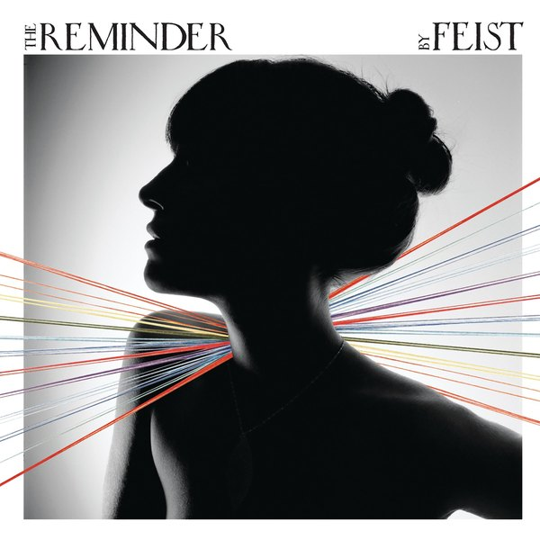
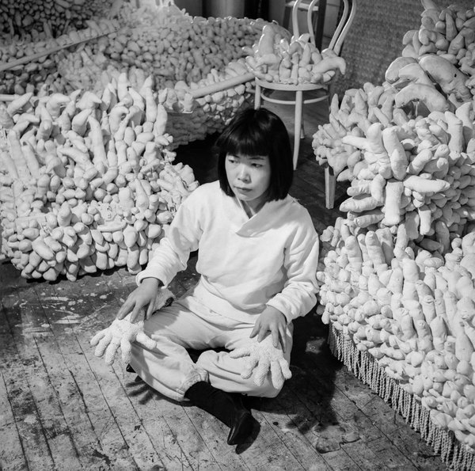
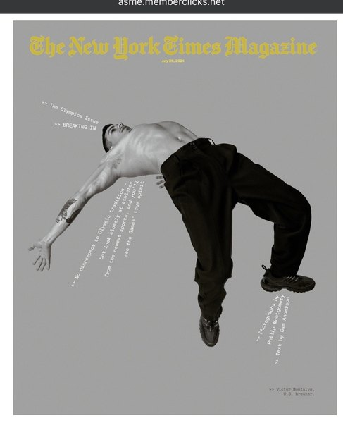
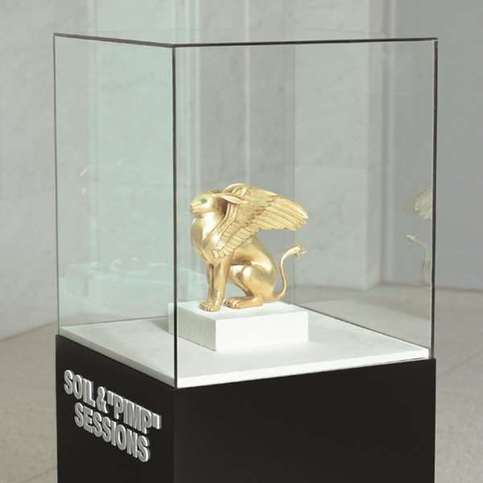
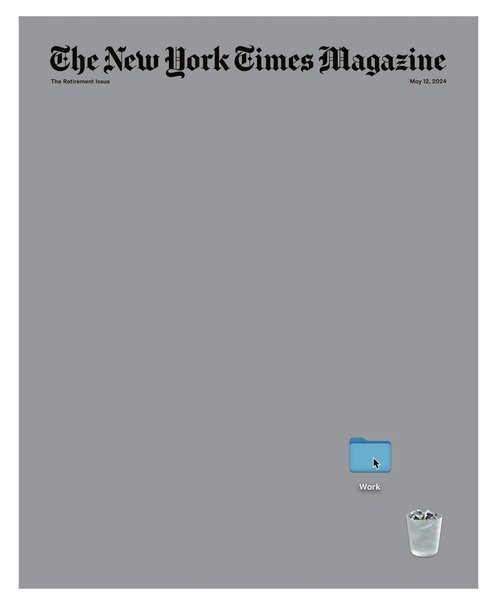
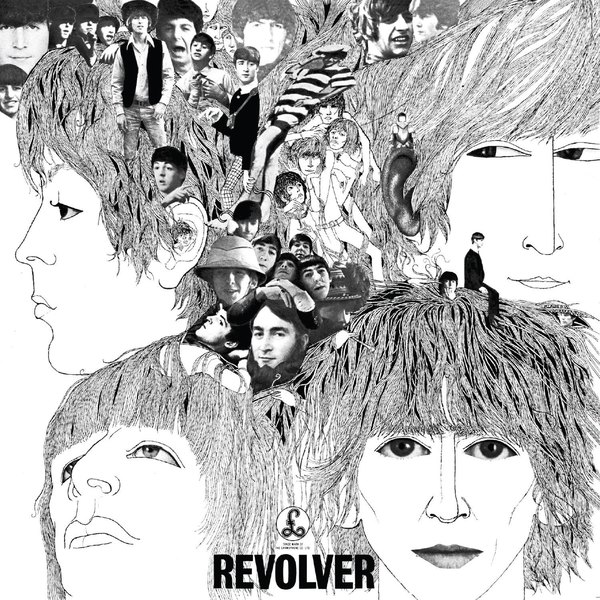

CRVI000162Kazumasa Nagai - The World of Kazumasa Nagai - Ikeda Museum of the 20th Century Art
Designed by Kazumasa Nagai · 1980
Designed by Kazumasa Nagai · 1980
CRVI000311Carl Craig - More Songs About Food And Revolutionary Art
Designer unknown · Planet E · 1997
Designer unknown · Planet E · 1997

CRVI000362Millie Jackson - Caught Up
Designer unknown · Spring · 1974
Designer unknown · Spring · 1974

CRVI000407Various Artists - Live Convention "80"
Designer unknown · Disc-O-Wax · 1981
Designer unknown · Disc-O-Wax · 1981

CRVI000233Portishead - Portishead
Designer unknown · Go! Beat · 1997
Designer unknown · Go! Beat · 1997

CRVI000018Philip Perkins - Drive Time
Designed by Guy Orcutt · Fun Music · 1985
Designed by Guy Orcutt · Fun Music · 1985

CRVI000043Raime - Quarter Turns Over A Living Line
Designed by Oliver Smith · 2012
Designed by Oliver Smith · 2012

CRVI000070Pierre Henry - Mise En Musique Du Corticalart De Roger Lafosse
Designer unknown · Philips · 1971
Designer unknown · Philips · 1971

CRVI000080Karen Gwyer - Needs Continuum
Designer unknown · No Pain In Pop · 2013
Designer unknown · No Pain In Pop · 2013

CRVI000236Kruder & Dorfmeister - G-Stoned
Designer unknown · G-Stone Recordings · 1993
Designer unknown · G-Stone Recordings · 1993

CRVI000386Conrad Schnitzler - Con
Designer unknown · Egg · 1978
Designer unknown · Egg · 1978

CRVI000081Mort Garson - Didn’t You Hear?
Designer unknown · Custom Fidelity · 1970
Designer unknown · Custom Fidelity · 1970

CRVI000304Cabaret Voltaire - The Voice Of America
Designer unknown · Rough Trade · 1980
Designer unknown · Rough Trade · 1980

CRVI000273Andrzej Krauze - Camera Buff
Film Poster · 1979 · 1979
Film Poster · 1979 · 1979

CRVI000155Red Garland Trio - Groovy
Designed by Reid Miles · Prestige 7113 · 1957
Designed by Reid Miles · Prestige 7113 · 1957

CRVI000314Underworld - Dubnobasswithmyheadman
Designer unknown · Junior Boy's Own · 1994
Designer unknown · Junior Boy's Own · 1994

CRVI000323Flying Lotus - Cosmogramma
Designer unknown · Warp · 2010
Designer unknown · Warp · 2010

CRVI000434Feist - The Reminder (Deluxe Version)
Designer unknown · Polydor · 2007
Designer unknown · Polydor · 2007

CRVI000222Yayoi Kusama - Kusama with her stuffed fabric works
Photograph by Evelyn Hofer · among the sewn phalluses of her room-filling installations · 1964
Photograph by Evelyn Hofer · among the sewn phalluses of her room-filling installations · 1964

CRVI000028Pete Swanson - Man With Potential
Designed by John Twells, Radu Prepeleac · Type · 2011
Designed by John Twells, Radu Prepeleac · Type · 2011

CRVI000041Kevin Harrison - Inscrutably Obvious
Designed by Obvious Products · Obvious · 1981
Designed by Obvious Products · Obvious · 1981

CRVI000072Euglossine - Sharp Time
Designer unknown · 2017
Designer unknown · 2017

CRVI000033Andy Stott - Too Many Voices
Artwork by Julie Lemberger · 2016
Artwork by Julie Lemberger · 2016

CRVI000486Philip Montgomery - The Olympics Issue
The New York Times Magazine, July 28, 2024 · 2024
The New York Times Magazine, July 28, 2024 · 2024

CRVI000224SOIL & "PIMP" SESSIONS - Pimp Of The Year
Designer unknown · Victor · 2006
Designer unknown · Victor · 2006

CRVI000066Bourbonese Qualk - Hope
Designer unknown · Recloose Organisation · 1984
Designer unknown · Recloose Organisation · 1984

CRVI000020Andy Stott - Faith In Strangers
Artwork by Herbert Matter · 2014
Artwork by Herbert Matter · 2014

CRVI000391Oneohtrix Point Never - Replica
Designer unknown · Software · 2011
Designer unknown · Software · 2011

CRVI000480Alex Merto - The Retirement Issue
The New York Times Magazine, May 12, 2024 · 2024
The New York Times Magazine, May 12, 2024 · 2024

CRVI000427Lou Ragland - Is The Conveyor "Understand Each Other®
Designer unknown · SMH Records · 1978
Designer unknown · SMH Records · 1978

CRVI000176The Beatles - Revolver
Designed by Klaus Voormann · Parlophone PCS7009 · 1966
Designed by Klaus Voormann · Parlophone PCS7009 · 1966

CRVI000181Shigeo Fukuda - Look 1
Exhibition · 103 x 73 cm offset · 1985
Exhibition · 103 x 73 cm offset · 1985

CRVI000004Laurel Halo - Chance Of Rain
Designed by Bill Kouligas · Hyperdub · 2013
Designed by Bill Kouligas · Hyperdub · 2013

CRVI000281Romare - Projections
Designer unknown · Ninja Tune · 2015
Designer unknown · Ninja Tune · 2015